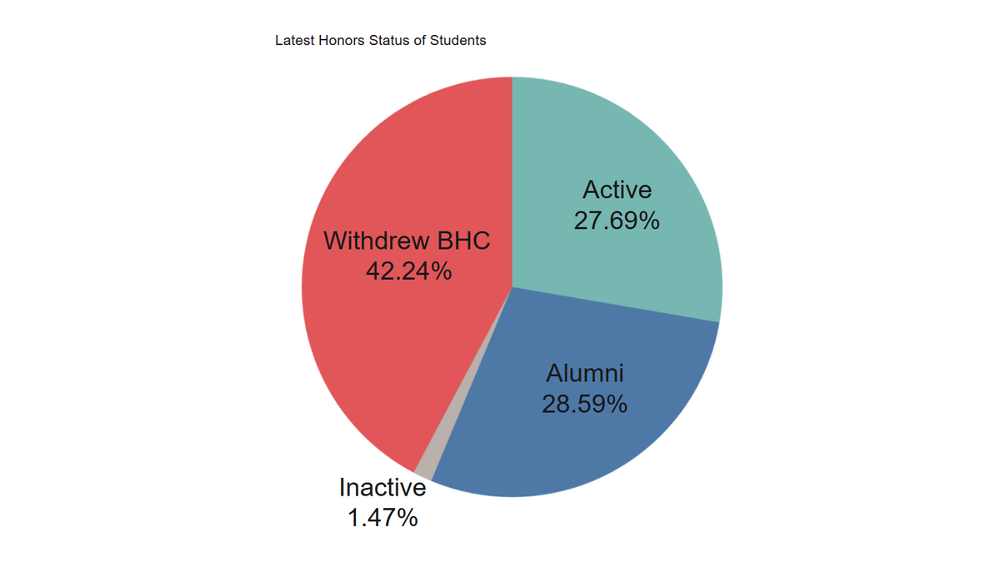

Published
Student Retention ML

Predicting Engineering Student Withdrawals from Barrett
Built a predictive ML pipeline on 5,427 student records, engineering 79 features with Cramér's V, smoothed target encoding, and interaction terms. Tuned a Random Forest with GridSearchCV and 5-fold cross-validation, then visualized findings in Tableau.